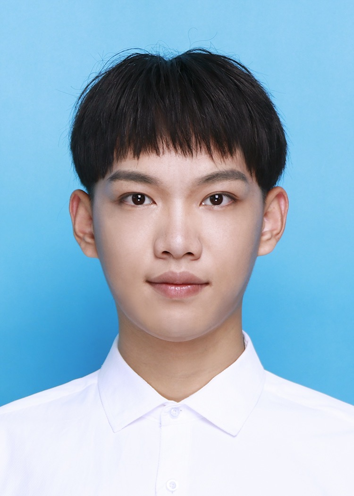
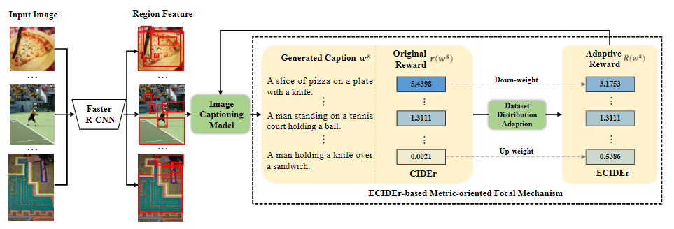
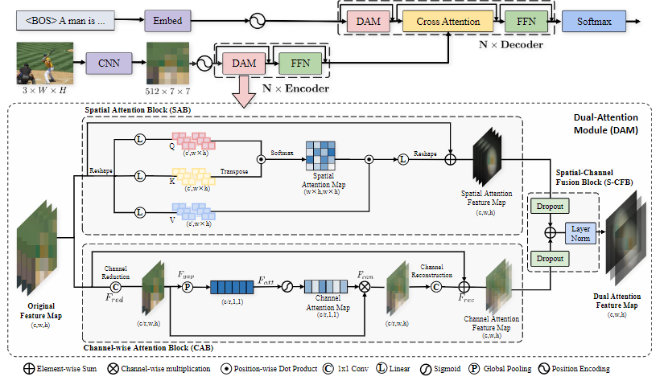
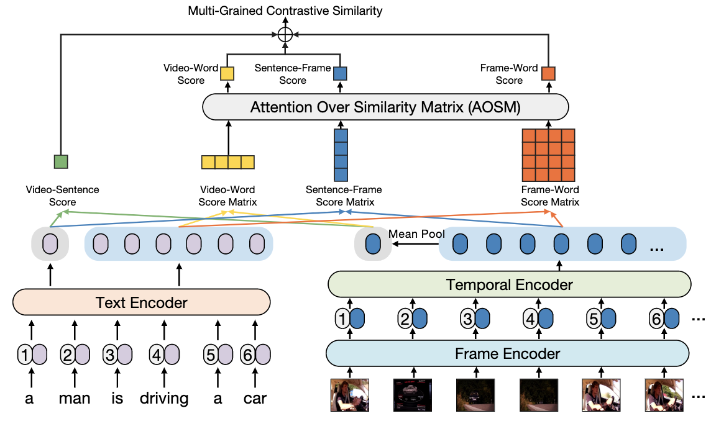
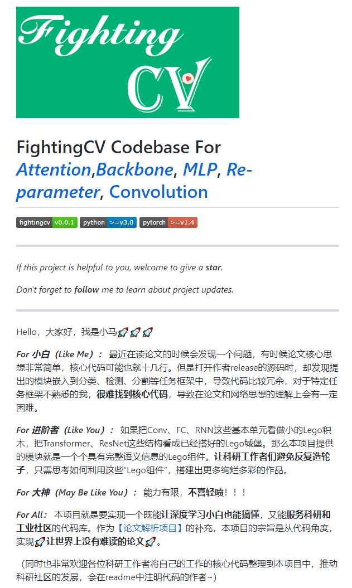

|  |
MSc at Xiamen University |
I am currently a final MSc student in Department of Artificial Intelligence, School of Informatics, Xiamen University, advised by Prof. Rongrong Ji and Prof. Xiaoshuai Sun .
My recent research interests are in vision-and-language learning.
|  | Jiayi Ji, Yiwei Ma (co-frist author), Xiaoshuai✉, Yongjian Wu, Rongrong Ji
Knowing What to Learn: A Metric-oriented Focal Mechanism for Image Captioning IEEE Transactions on Image Processing (TIP), 2022 [pdf] |
|  | Yiwei Ma, Jiayi Ji, Xiaoshuai✉, Yongjian Wu, Feiyue Huang, Rongrong Ji
Knowing what it is: Semantic-enhanced Dual Attention Transformer IEEE Transactions on Multimedia (TMM), 2022 [pdf] [code] |
|  | Yiwei Ma, Guohai Xu, Xiaoshuai Sun✉, Ming Yan, Ji Zhang, Rongrong Ji
X-CLIP: End-to-End Multi-grained Contrastive Learning for Video-Text Retrieval ACM International Conference on Multimedia (ACM MM), 2022 [pdf coming] [code comming] |
|  |
External-Attention-pytorch Pytorch implementation of various Attention Mechanisms, MLP, Re-parameter, Convolution, which is helpful to further understand papers. [github (5500+ star)] |